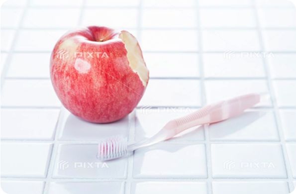

ここにさわやか歯科の歯周治療のタイトルテキストが入ります。
さわやか歯科の歯周治療はこうです。ここに簡単な説明のテキストが入ります。この文章はダミーです。文字の大きさ、量、字間、行間等を確認するために入れています。この文章はダミーです。文字の大きさ、量、字間、行間等を確認するために入れています。この文章はダミーです。
さわやか歯科の歯周治療はこうです。ここに簡単な説明のテキストが入ります。この文章はダミーです。文字の大きさ、量、字間、行間等を確認するために入れています。この文章はダミーです。文字の大きさ、量、字間、行間等を確認するために入れています。この文章はダミーです。
歯の病気の代表的なものに､むし歯(う蝕) と 歯周病 があります｡むし歯は “歯そのもの" が破壊される病気 ですが､歯周病は “歯を支えるまわりの組織(歯周組織)" に起こる病気です｡ 自分で気がつかない軽い歯周病を含めると､40歳以上の成人のうち､5人に4人以上､なんと80%が歯周病にかかっているといわれ､痛みもなく静かに進行していきます｡歯周病は歯を失う最も大きな原因となっています｡
歯周組織は､歯肉(歯ぐき)と歯槽骨(歯を支える骨組織)､歯根(歯の根元)をおおうセメント質､歯根と歯槽骨をつなぐ歯根膜からなり､歯を正しい位置にしっかり付着､固定するための強固な構造を備えています｡
しかし､ 歯磨きが不十分で､歯と歯肉の間に細菌が住み着いて歯垢(プラーク)がたまると､そこに炎症が引き起こされます｡ これが歯周病の始まりです｡
初めは自覚症状がなく、鏡で見ても気がつきませんが、そのうち歯肉が赤くなったり腫れたりします。
プラークが石灰化し歯石になると、自分では取り除きにくくなって歯周病が悪化し、歯と歯肉が付着している部分にすき間（歯周ポケット）ができます。
さらに、炎症が歯肉の内部に進行すると、歯根膜や歯槽骨が破壊されて、歯を固定する力がだんだん弱くなります。
この状態のまま放っておくと、ついには歯を失うことになります。
歯周病の治療は、比較的軽い歯周病であれば、歯や歯の周りを清潔に保つ治療を続けることで治すことができます。しかし、炎症が歯肉の奥まで進行し、歯周組織の破壊がひどい場合には、歯周組織を回復させるための手術（歯周外科手術）が必要となります。この手術の際に、歯周組織再生誘導材料という手術治療を補助するための、歯科用の材料が使われることがあります。